МАСЛЯНЫЙ НАСОС (для моделей без DPF) > СНЯТИЕ |
| 1. ОТСОЕДИНИТЕ ПРОВОД ОТ ОТРИЦАТЕЛЬНОГО ВЫВОДА АККУМУЛЯТОРНОЙ БАТАРЕИ |
| 2. СЛЕЙТЕ МОТОРНОЕ МАСЛО |
Снимите крышку маслоналивной горловины.
Выверните пробку сливного отверстия масляного поддона с прокладкой, а затем слейте моторное масло в емкость.
Протрите масляный поддон и пробку сливного отверстия.
Установите новую прокладку и пробку сливного отверстия масляного поддона.
| 3. СНИМИТЕ НИЖНЮЮ ОБЛИЦОВКУ ПЕРЕДНЕГО БАМПЕРА |
Освободите фиксатор, выверните 5 болтов и снимите нижнюю накладку переднего бампера.
| 4. СНИМИТЕ ЗАЩИТУ КАРТЕРА ДВИГАТЕЛЯ № 1 В СБОРЕ |
Выверните 4 болта и снимите защиту картера двигателя № 1.
| 5. СЛЕЙТЕ ОХЛАЖДАЮЩУЮ ЖИДКОСТЬ ДВИГАТЕЛЯ |
Ослабьте пробку сливного крана радиатора.
 |
Слейте охлаждающую жидкость, сняв пробку расширительного бачка, а затем с помощью ключа снимите вентиляционную пробку.
Ослабьте пробку сливного крана блока цилиндров.

| *1 | Бачок радиатора | *2 | Вентиляционная пробка |
| *3 | Пробка сливного крана радиатора | *4 | Пробка сливного крана блока цилиндров |
| 6. СНИМИТЕ ДВИГАТЕЛЬ В СБОРЕ |
Снимите двигатель (Нажмите здесь).
| 7. ЗАКРЕПИТЕ ДВИГАТЕЛЬ НА СТЕНДЕ ДЛЯ ДВИГАТЕЛЯ |
| 8. СНИМИТЕ ГЕНЕРАТОР В СБОРЕ |
| 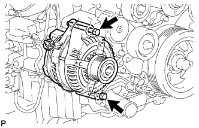 |
Выверните 2 болта и снимите генератор.
| 9. СНИМИТЕ КРОНШТЕЙН ГЕНЕРАТОРА |
 |
Выверните болт и снимите кронштейн генератора.
| 10. СНИМИТЕ КРОНШТЕЙН КРЕПЛЕНИЯ КОМПРЕССОРА № 1 |
 |
Выверните 5 болтов и снимите кронштейн крепления компрессора № 1.
| 11. СНИМИТЕ ТРУБКУ ВЕНТИЛЯЦИИ КАРТЕРА |
 |
Выверните болт и отсоедините 2 шланга вентиляции картера и трубку вентиляции картера.
| 12. СНИМИТЕ ТРУБКУ ЩУПА ПРОВЕРКИ УРОВНЯ МАСЛА |
Снимите щуп проверки уровня моторного масла.
| 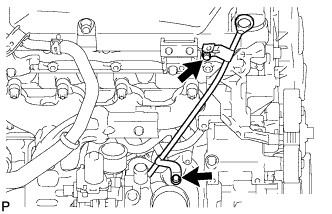 |
Выверните 2 болта и снимите трубку щупа проверки уровня моторного масла.
Снимите с трубки щупа проверки уровня моторного масла кольцевое уплотнение.
| 13. СНИМИТЕ КРЫШКУ ГОЛОВКИ БЛОКА ЦИЛИНДРОВ № 2 В СБОРЕ |
 |
Выверните 4 болта и снимите крышку головки блока цилиндров № 2.
| 14. СНИМИТЕ ИЗОЛЯТОР КРЫШКИ ГАЗОРАСПРЕДЕЛИТЕЛЬНОГО МЕХАНИЗМА |
| 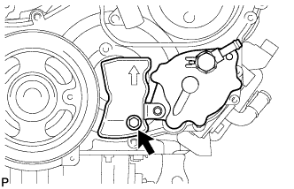 |
Выверните болт и снимите изолятор крышки газораспределительного механизма.
| 15. СНИМИТЕ ВАКУУМНЫЙ НАСОС В СБОРЕ |
 |
Отверните 2 гайки и снимите вакуумный насос и 2 кольцевых уплотнения.
| 16. СНИМИТЕ ЛОПАСТНОЙ НАСОС В СБОРЕ |
 |
Отверните 2 гайки и снимите лопастной насос и кольцевое уплотнение.
| 17. СНИМИТЕ ДАТЧИК ПОЛОЖЕНИЯ РАСПРЕДВАЛА |
| 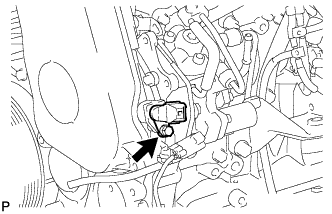 |
Выверните болт и снимите датчик положения распредвала.
| 18. СНИМИТЕ ДАТЧИК ПОЛОЖЕНИЯ КОЛЕНЧАТОГО ВАЛА |
 |
Освободите зажим, выверните болт и снимите датчик положения коленчатого вала.
| 19. СНИМИТЕ ПРИВОДНОЙ РЕМЕНЬ ГАЗОРАСПРЕДЕЛЕНИЯ |
Снимите приводной ремень газораспределения (Нажмите здесь).
| 20. СНИМИТЕ ОПОРНЫЙ РОЛИК ПРИВОДНОГО РЕМНЯ ГАЗОРАСПРЕДЕЛЕНИЯ № 1 В СБОРЕ |
С помощью шестигранного ключа на 10 мм выверните болт и снимите опорный ролик приводного ремня газораспределения № 1 и шайбу.
| 21. СНИМИТЕ ШКИВ КОЛЕНЧАТОГО ВАЛА |
 |
Используя SST, зафиксируйте шкив коленчатого вала и ослабьте болт шкива.
 |
С помощью SST выверните болт шкива и снимите шкив коленчатого вала.
| 22. СНИМИТЕ ЭЛЕКТРИЧЕСКИЙ КЛАПАН УПРАВЛЕНИЯ РОГ В СБОРЕ (для моделей с системой РОГ) |
Снимите электрический клапан управления РОГ (Нажмите здесь).
| 23. СНИМИТЕ КРОНШТЕЙН КОРПУСА ДРОССЕЛЬНОЙ ЗАСЛОНКИ (для моделей без системы РОГ) |
 |
Отсоедините вакуумный шланг.
Выверните болт и снимите газовый фильтр с кронштейном газового фильтра.
Выверните 2 болта и снимите кронштейн корпуса дроссельной заслонки.
| 24. СНИМИТЕ ТОПЛИВНУЮ ТРУБКУ ВЫСОКОГО ДАВЛЕНИЯ (для моделей без системы РОГ) |
 |
Отверните 2 гайки и снимите зажим топливной трубки высокого давления № 3.
| 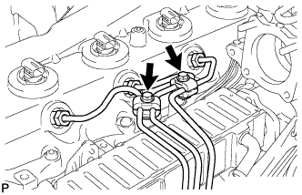 |
Выверните 2 болта и снимите 2 зажима топливной трубки высокого давления № 2.
 |
С помощью разрезной головки на 17 мм ослабьте гайки штуцеров и снимите топливные трубки высокого давления № 1, № 2 и № 3.
| *a | Со стороны форсунки |
| *b | Со стороны топливной системы Common Rail |
| 25. СНИМИТЕ ОПОРУ ПАТРУБКА ПОДАЧИ ВОЗДУХА (для моделей без системы РОГ) |
 |
Выверните 3 болта и снимите опору патрубка подачи воздуха.
| 26. СНИМИТЕ ПАТРУБОК ПОДАЧИ ВОЗДУХА С КОРПУСОМ ДРОССЕЛЬНОЙ ЗАСЛОНКИ ДИЗЕЛЬНОГО ДВИГАТЕЛЯ В СБОРЕ (для моделей без системы РОГ) |
 |
Отсоедините разъем датчика положения дроссельной заслонки.
| 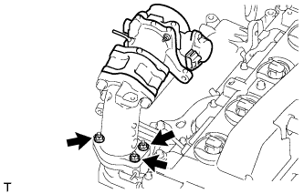 |
Выверните 3 болта и снимите патрубок подачи воздуха с дроссельной заслонкой дизельного двигателя и прокладку.
| 27. СНИМИТЕ ОПОРУ КОЛЛЕКТОРА С ЭЛЕКТРОВАКУУМНЫМ КЛАПАНОМ |
Отсоедините разъем электровакуумного клапана.
 |
Для моделей без системы РОГ:
Отсоедините разъем.
 |
Для моделей с системой РОГ без охладителя РОГ:
Отсоедините 2 разъема.
| 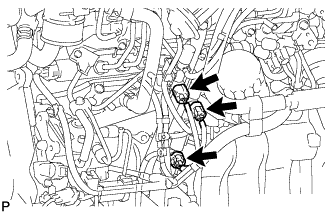 |
Для моделей с системой РОГ с охладителем РОГ:
Отсоедините 3 разъема.
 |
Отсоедините вакуумный шланг № 1.
 |
Для моделей с системой РОГ:
Отсоедините вакуумные шланги № 2 и № 3.
 |
Для моделей с охладителем РОГ:
Отсоедините вакуумный шланг № 3.
 |
Отсоедините вакуумные шланги № 3 и № 4.
| *A | Для моделей без системы РОГ |
| *B | Для моделей с системой РОГ |
 |
Выверните 2 болта и снимите опору коллектора с электровакуумным клапаном.
| 28. СНИМИТЕ ТРУБКУ ПОДВОДА ТОПЛИВА |
| 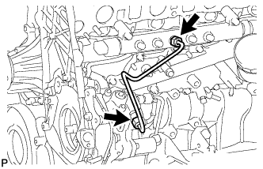 |
Ослабьте гайки штуцеров и снимите трубку подвода топлива.
| 29. СНИМИТЕ НАГНЕТАЮЩИЙ НАСОС В СБОРЕ |
 |
Выверните 4 болта, указанные стрелками на рисунке.
Снимите фланец зубчатого колеса распредвала № 2 и шкив приводного вала насоса.
 |
Отверните установочную гайку и снимите кольцевое уплотнение, удерживая шкив коленчатого вала с помощью SST.
 |
Ослабьте 2 гайки.
 |
Отсоедините нагнетающий насос от шестерни насоса высокого давления с помощью SST.
Отверните 2 гайки и снимите нагнетающий насос.
Снимите кольцевое уплотнение.
| 30. СНИМИТЕ ВАКУУМНУЮ ТРУБКУ № 1 В СБОРЕ |
| 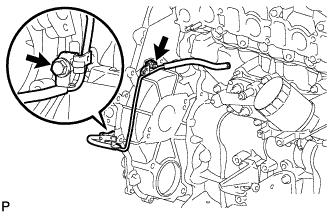 |
Выверните болт, отверните гайку и отсоедините вакуумную трубку № 1.
| 31. СНИМИТЕ КРЫШКУ МАСЛЯНОГО ПОДДОНА № 1 В СБОРЕ |
 |
Выверните 4 болта и снимите крышку масляного поддона № 1.
| 32. СНИМИТЕ УПЛОТНИТЕЛЬНОЕ КОЛЬЦО ФОРСУНКИ В ГОЛОВКЕ БЛОКА ЦИЛИНДРОВ |
 |
С помощью небольшой отвертки снимите 4 уплотнительных кольца, поддев часть между каждым уплотнительным кольцом и вырезом крышки головки блока цилиндров.
| 33. СНИМИТЕ КРЫШКУ ГОЛОВКИ БЛОКА ЦИЛИНДРОВ В СБОРЕ |
 |
Выверните 10 болтов, отверните 2 гайки и снимите крышку головки блока цилиндров и прокладку.
| 34. СНИМИТЕ ФОРСУНКУ В СБОРЕ |
 |
Выверните пустотелый соединительный болт-штуцер, 4 полых винта форсунок и снимите 5 прокладок и трубопровод обратного слива топлива.
| *1 | Пустотелый соединительный болт-штуцер |
| 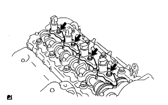 |
Выверните 4 болта и снимите 4 шайбы, 4 фиксатора корпуса форсунок № 1 и 4 форсунки.
Снимите кольцевое уплотнение с каждой форсунки.
Снимите 4 седла форсунок с головки блока цилиндров.
| 35. СНИМИТЕ ЗУБЧАТОЕ КОЛЕСО РАСПРЕДВАЛА |
 |
Выверните болт зубчатого колеса распредвала, удерживая распредвал ключом.
Снимите зубчатое колесо распредвала.
| 36. СНИМИТЕ КРЫШКУ РЕМНЯ ГАЗОРАСПРЕДЕЛЕНИЯ № 2 |
 |
Выверните 4 болта, отверните гайку и снимите крышку ремня газораспределения № 2.
| 37. СНИМИТЕ НАСОС СИСТЕМЫ ОХЛАЖДЕНИЯ В СБОРЕ |
 |
Выверните 5 болтов, отверните 2 гайки и снимите насос системы охлаждения и прокладку.
| 38. СНИМИТЕ КРЫШКУ ГАЗОРАСПРЕДЕЛИТЕЛЬНОГО МЕХАНИЗМА |
 |
Выверните 14 болтов и отверните 2 гайки.
Подденьте крышку механизма в местах, показанных на рисунке, и снимите крышку механизма вместе с шестерней насоса высокого давления.
Снимите кольцевое уплотнение с картера газораспределительного механизма.
| 39. СНИМИТЕ ШЕСТЕРНЮ НАСОСА ВЫСОКОГО ДАВЛЕНИЯ |
| 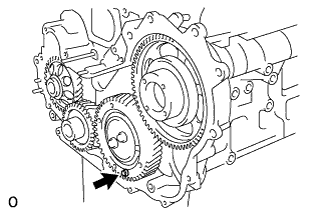 |
Закрепите вспомогательную промежуточную шестерню № 2 на промежуточной шестерне № 1 с помощью технологического болта.
 |
Снимите шестерню насоса высокого давления.
| 40. СНИМИТЕ ЗУБЧАТЫЙ ДИСК ДАТЧИКА ПОЛОЖЕНИЯ КОЛЕНЧАТОГО ВАЛА № 1 |
Снимите диск зубчатый диск датчика положения коленчатого вала № 1.
| 41. СНИМИТЕ ВЕДУЩЕЕ ЗУБЧАТОЕ КОЛЕСО КОЛЕНЧАТОГО ВАЛА |
 |
С помощью SST снимите ведущее зубчатое колесо коленчатого вала.
| 42. СНИМИТЕ УПОРНЫЙ ДИСК ПРОМЕЖУТОЧНОЙ ШЕСТЕРНИ |
| 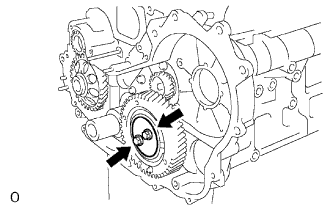 |
Выверните 2 болта и снимите упорный диск.
| 43. СНИМИТЕ ПРОМЕЖУТОЧНУЮ ШЕСТЕРНЮ № 1 |
Снимите промежуточную шестерню № 1 вместе со вспомогательной промежуточной шестерней № 2.
| 44. СНИМИТЕ ВАЛ ПРОМЕЖУТОЧНОЙ ШЕСТЕРНИ № 1 |
Снимите вал промежуточной шестерни.
| 45. СНИМИТЕ ПОДДОН КАРТЕРА № 2 В СБОРЕ |
 |
Выверните 11 болтов и отверните 2 гайки.
 |
Вставьте лезвие инструмента для обрезки прокладки поддона картера между масляными поддонами. Срежьте нанесенный герметик и снимите масляный поддон № 2 в сборе.
| 46. СНИМИТЕ МАСЛОПРИЕМНИК С СЕТЧАТЫМ ФИЛЬТРОМ В СБОРЕ |
| 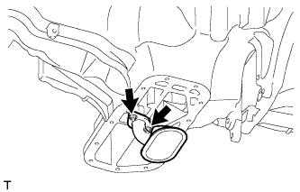 |
Отверните 2 гайки и снимите маслоприемник с сетчатым фильтром и прокладку.
| 47. СНИМИТЕ МАСЛЯНЫЙ ПОДДОН В СБОРЕ |
| 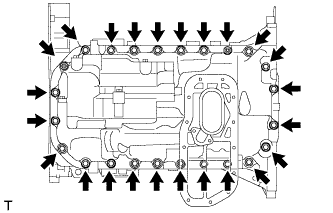 |
Выверните 22 болта и отверните 2 гайки.
С помощью отвертки отделите масляный поддон, используя ее в качестве рычага в определенных местах между блоком цилиндров и масляным поддоном, как показано на рисунке.
| *A | Левая сторона |
| *B | Правая сторона |
| *1 | Подденьте |
 |
Снимите прокладку.
| 48. СНИМИТЕ КАРТЕР ГАЗОРАСПРЕДЕЛИТЕЛЬНОГО МЕХАНИЗМА В СБОРЕ |
Выверните болт-штуцер и 8 болтов.
Подденьте картер механизма в месте, показанном на рисунке, и снимите картер механизма и прокладку.
Снимите 2 кольцевых уплотнения.